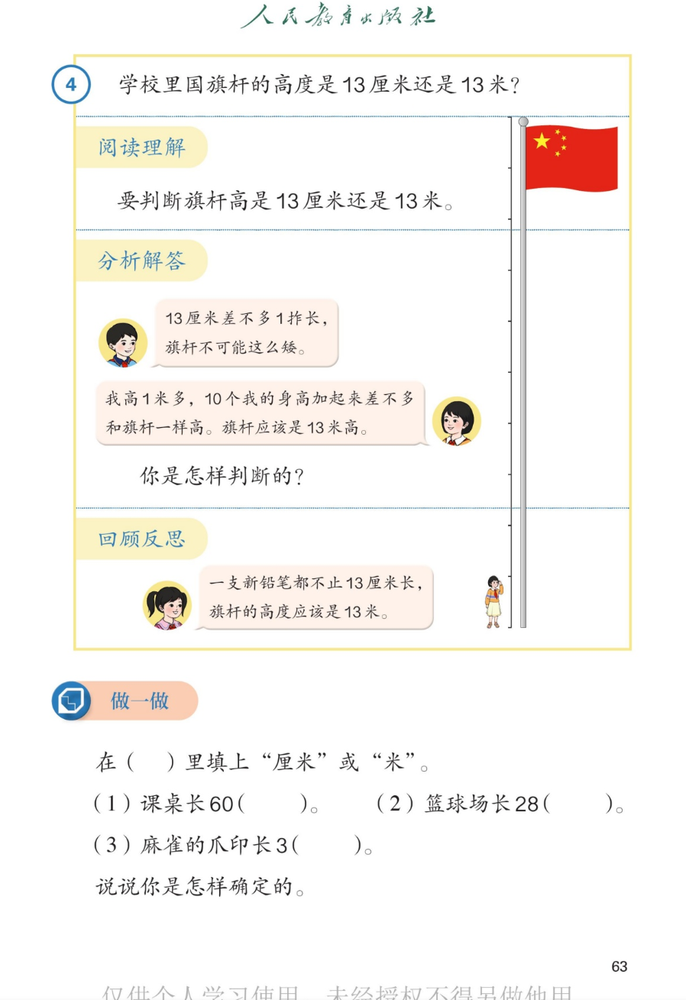

🔊 四、厘米和米 · 课本第 63 页 · 例4 旗杆 13 厘米还是 13 米
人教版《数学》二年级上册 · 有声图文带读 · 先想后看解析 · 用身体感受判断长度单位
题数
6
认知
2
强化
3
拓展
1
本页重点
阅读理解 · 分析解答 · 回顾反思 · 选合适的单位
🎧 分两步学：
① 解析教材图片
——纯声音读图，读到哪一块哪一块闪动提示；关键处先倒计时让你思考，再在图片下方给出解析并朗读。
② 分层提问练习
——六道分层题（认知 / 强化 / 拓展），先思考再展开解析、朗读参考答案；这一步不再回到图片。
也可以随时点任意一句话、图上任意一块单独听；点课本文字卡还会展开答案。
教材图片（点块听读，读到哪块哪块闪）

📖 人教版《数学》二年级上册 · 课本第 63 页 · 图片仅供个人学习，版权归人民教育出版社所有
🤔 想一想（点我可跳过）
课本的文字（点句子：听读 + 看答案）
阅读理解
题目要我们做什么？
看答案 ▾
旗杆的高度有两个说法：13 厘米或 13 米；
要判断哪个
符合实际
；
数字都是 13，关键看
单位
对不对。
分析解答
怎么判断？
看答案 ▾
想法一：13 厘米≈
1 拃
，旗杆不可能只有一拃高；
想法二：我高 1 米多，
10 个我的身高
≈旗杆 → 13 米；
结论：旗杆高
13 米
。
回顾反思
检查答案是否合理
看答案 ▾
一支新铅笔长都
超过 13 厘米
；
旗杆比铅笔长得多 → 当然是
13 米
；
💡 答完要回头看：单位和实际比一比
做一做
填"厘米"或"米"
看答案 ▾
(1) 课桌长 60（
厘米
）——比 1 米少一点，和手臂差不多长；
(2) 篮球场长 28（
米
）——很长，几十步才走完；
(3) 麻雀的爪印长 3（
厘米
）——比 1 厘米长一点点。
分层提问练习（先想后看解析）
🚩
认知
例 4 要判断什么问题？
看解析
🤔 想一想
解析：
判断旗杆高是
13 厘米
还是
13 米
；
数字一样，比的是
单位
哪个合理。
✅
认知
旗杆的高度到底是多少？
看解析
🤔 想一想
解析：
旗杆高
13 米
；
13 厘米≈1 拃，连铅笔都不到，
不合理
。
🤏
强化
为什么旗杆不可能是 13 厘米高？
看解析
🤔 想一想
解析：
13 厘米≈
1 拃
，比手掌张开还短不了多少；
铅笔、书本都比 13 厘米长，旗杆
肯定更高
。
🧍
强化
怎样用身体感受判断长度单位？
看解析
🤔 想一想
解析：
1 厘米≈食指宽
，
1 米≈到胸口
；
把 13 厘米、13 米在身体上比一比，合不合理马上知道。
💡 身体感受是判断单位的"金标准"
📝
强化
做一做：三道填单位题的答案和理由？
看解析
🤔 想一想
解析：
课桌长 60（
厘米
）；篮球场长 28（
米
）；爪印长 3（
厘米
）；
理由：
短的用厘米，长的用米
，和实际比一比。
🌈
拓展
说说你确定长度单位的小窍门。
看解析
🤔 想一想
解析：
窍门一：先想
1 厘米、1 米
各有多长；
窍门二：把数和
熟悉的物体
比；窍门三：答案要
符合实际
。
🌈 三步走：想单位 → 比实际 → 再检查
① 解析教材图片
② 分层提问练习
⏹ 停止
纯声音 + 高亮跟随 · 想好才出解析
← 返回导航